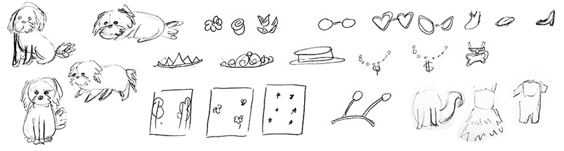

Week 13: 24/11/17
Critique:
I got Coby to have a look at my progress and he gave me some feedback. Things like: getting rid of the cross marks on the right side of the thumbnails, because a) the user can click on the thumbnail to toggle the item on and off, and b) the user can click on another item (of the same row) and have the previous one toggle off and c) there is a reset button which would, by default, toggle off every single item.
Coby also suggested that I change the stroke width of the border once it’s turned on, because some of the artwork hide the orange border (and it isn’t obvious enough).
Another thing that Coby has suggested is an option for the user to “save” their outfit, ie, save a screen capture or an image of the current outfit the user has chosen.
Going forward:
I had to change the dimensions of my game slightly to accommodate for the loss of the cross marks, and the addition of the new “Take a pic!” button. I then added in the rest of the thumbnails, and I changed the border stroke too. The image below (on the left) shows the before state (nothing pressed) and the image below (on the right) shows some items of clothing ‘ON.’
I did a really quick search as to how I would code for the user to be able to save their image, and it seemed like a lengthy process. But here are some future links to look into for saving images to the user’s computer:
Back To Top
Week 12: 18/11/17
Starting to code the game!
I started off with wireframing, using divs of different colours to help me get a sense of where everything fits on the page. I used my existing wireframe to help me lay everything out.
I then used margin rules to position those divs in specific places. I tried to be consistent, where I would try to only change the top margin rule and the left margin rule. I also tried to use Gestalt Principles to help me group things (ie things grouped together are seen to be connected versus things that are not relatively close to each other.)

I then inserted the top row of images, and I tested out different ways to display the information, in terms of code. I looked up ways to hide and show elements using jQuery(I used toggle for this). I also added in a display style css value so the toggle starts off as ‘hidden’ instead of shown. I also added a toggle class, which helped me when highlighting a specific thumbnail (when it is ‘shown’). This code below allows the user to tap on any of the thumbnail, and the corresponding item will show up on Cinnamon. If they click on another item in the same row, the existing item will be hidden, and thus show said clicked item.
To get the layers to overlap, I had organised the big photos in a way which allowed for such layering. I also added multiple classes to the different rows/categories. Here are two screenshots, one with nothing selected, and the second one with something from one of each selected.
Right now I think that I'm okay with where I am headed. My only worry is the efficiency of the code. I am sure that there are a million easier ways to do what I am doing!
Back To Top
Week 11: 11/11/17
Proposal:
A dress up game with mty dog, Cinnamon as the main character. The design style will be illustrative, and doodle-like with different brush patterns.
I will need to create my own art, using photoshop and a variety of brushes that I have made using scanned in elements. I hope to finish this project by the deadline that the professor has set.
I will start off with researching existing dress up games to see similar patterns, and I will research existing art, for which I'd like to model my own art after.
I will be using Photoshop for the art, inDesign to quickly wireframe, and Brackets for coding.
Wireframe:
On the left, it shows the default, with nothing chosen. On the right shoes an outfit picked out for cinnamon. The colour scheme uses a similar one to my website. The icon style also uses a similar aesthetic to my website. Once an item is selected, there will be a red border that is shown to give the user visibility as to what they’ve clicked on. There is a cross so they could hide the particular item. There is also a big reset button at the bottom so the user could restart the dress up game.
Design comps:
These are all the accessories and clothing that I will be using for this game. These are in PNG format, which supports transparent backgrounds. I used photoshop and an assortment of brushes to give the collage/doodle look:
Here are all the thumbnails that I will be using for the game. These will act as buttons for the user to click on:
Here are the icons and buttons that will be used in the game:

Tech Overview:
I will be using jQuery, and basically layer all the images on top of each other, and by default have them ‘off.’ Once the user taps on an accessory or clothing, it will turn the accessory/clothing ‘on.’
Back To Top
Week 10: 11/4/17
Concept:
A dress up game, but with my dog, Cinnamon as the character the user is dressing up.
Color:
I wanted something youthful, vibrant and fun, but at the same time, I want it with softer tones to suit the doodle/drawn style I am after. Possible colours include:

Typography:
For the name of the game ‘Cinnamon’s closet’ I am planning to use my own handwriting, stylized to suit the drawn aesthetic of the game. Here are some sketches:

For the body text of the game, if any, I will use the typeface Montserrat, because I feel like the circular san-serif typography looks more modern and youthful compared to a serif font.

Layout/Grid:
I looked at existing dress up games to get an idea of the layout, colour and content. Here are some inspiration.

My grid is roughly based off a 12-column layout grid:

Photography/Illustration:
I wanted a doodle/drawn aesthetic to the game, which I know will be difficult to pull off, especially if I will draw things on the computer. Here are some inspiration:

Quick sketches of potential content for accessories and clothing, and the look of Cinnamon.
Tech features:
I found some pens from codepen that I can base my code from, for example:
Javascript is used, with PNG images layered on top of each other. Once a button is clicked, the accessory, or clothing item is revealed.
Back To Top